eSan Francisco #botday: le singole persone, le grandi aziende, il social, i cittadini
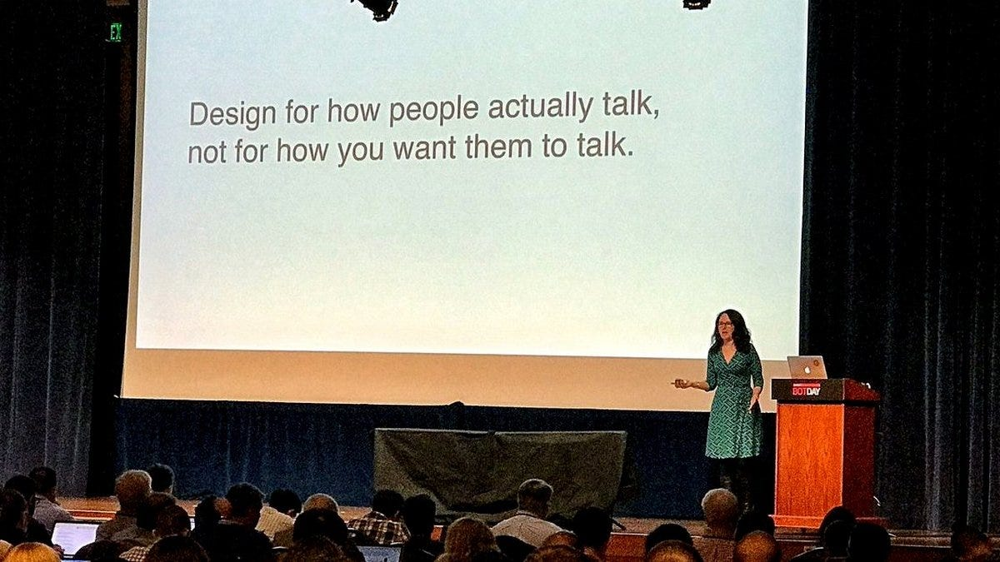
Ho seguito tutto (…) il live tweet del #botday, la megaconferenza del 19 ottobre a San Francisco, organizzata da O’Reilly:http://conferences.oreilly.com/artificial-intelligence/bot-ca/public/schedule/proceedings
Ho chattato al volo con qualche relatore e persona presente in sala. Raccolgo qui qualche foto agli speakers che mi hanno più colpito maggiormente.
Cathy Pearl (sulla user experience ed il linguaggio)
Una delle slides più più re-twittate/commentate all’evento, è quella che ho inserito come foto di copertina, di Cathy Pearl, Director of User Experience in Sense_ly. Dice Cathy:
Progetta [un chtabot] in base a come la gente parla davvero, e non per come vorresti parlasse!
Questa frase è piaciuta molto al pubblico e pare essere, per uno sviluppatore di applicazioni conversazionali, un proposito totalmente condivisibile, ma mi ha fatto fare qualche riflessione, lasciandomi perplesso:
Qual è la lingua che la gente parla davvero ?
O non sono invece molteplici le lingue parlate dai cittadini di uno stesso rione? E’ opportuno omologare un chatbots ad un singolo paradigma di comunicazione linguistica mainstream (quindi per esempio, nell’ambito di una applicazione customer care, l’usare un linguaggio formale e serio in lingua naturale italiana? Oppure per una applicazione di online-shopping destinata ad un pubblico molto giovane, è opportuno l’utilizzo di uno specifico linguaggio gergale, slang, dialettale, o con emoji, nel caso di chatbot che gira su applicazione di messaggistica istantanea)?
O invece può essere migliore un approccio #botpersona ? Cioè potrebbe essere interessante far adeguare l’utente ad un linguaggio specifico di un chatbot?
Penso che i bots di prossima generazione avranno una propria #boteness e forse sarà meglio che il bot-linguaggio sia riconoscibile come non-naturale e peculiare alla “personalità” artificiale del bot.
Comunque il talk di Cathy mi è piaciuto ed il libro in anteprima “Designing Voice User Interface”, l’ho già comprato, essendomi convinto da tempo che il futuro sarà nell’interfaccia vocale (CUI -> VUI).
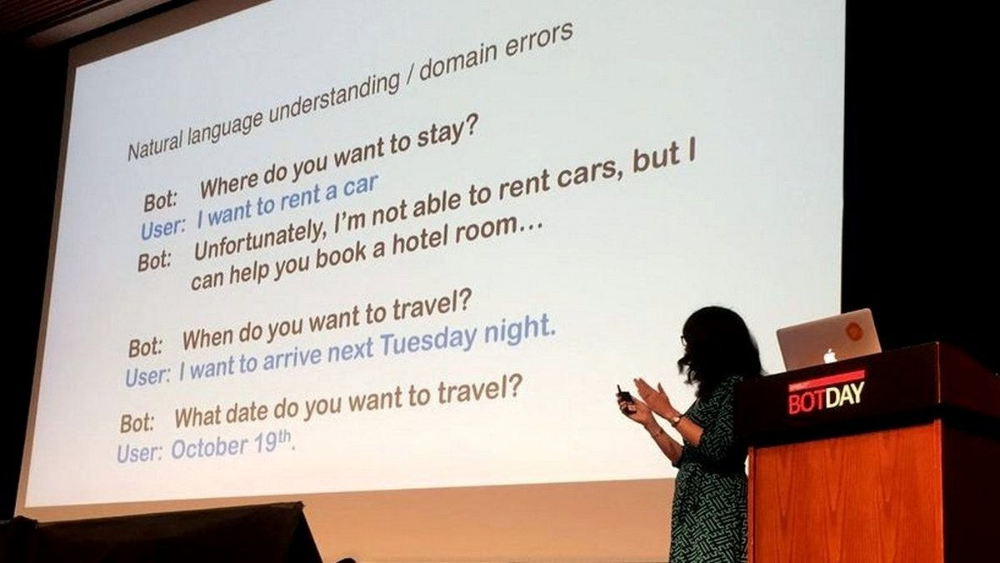
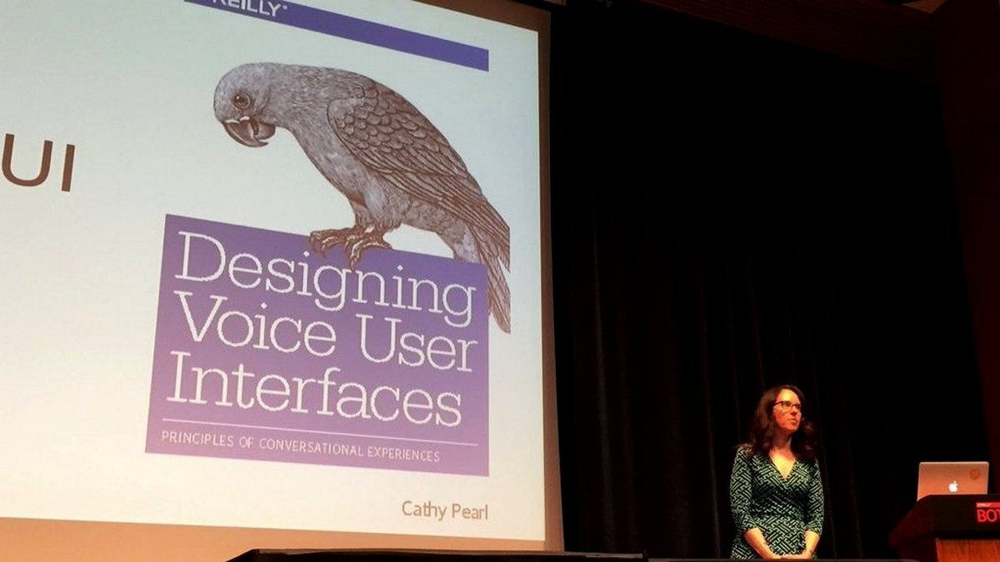
Lili Cheng (sugli aspetti sociali, su Xiaoice)
Molto interessante anche l’intervento di Lili Cheng, responsabile del progetto Microsoft FUSELabs. Lili ha parlato delle applicazioni chabot “social”, cercando di spiegare, tra l’altro, il successo di Xiaoice tra i giovani Cinesi (ma anche Giapponesi), dimostrando le abilità del chatbot non solo nel chit-chat, ma anche in ambiti di ausilio alla didattica, etc.
BTW, Consiglio di ascoltare l’intervista di Jon Bruner:
Lili Cheng on bot personalities
La ricercatrice ha poi illustrato alcune strategie del Microsoft bot Framework, tra cui il “disaccoppiamento” e l’indipendenza dai canali: a tal proposito, mi ha fatto piacere che tra i canali possibili (per i chatbots), Lili abbia menzionato le mail! e la CLI (command line interface):
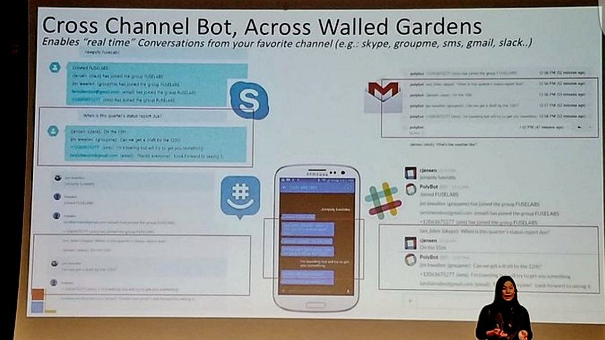
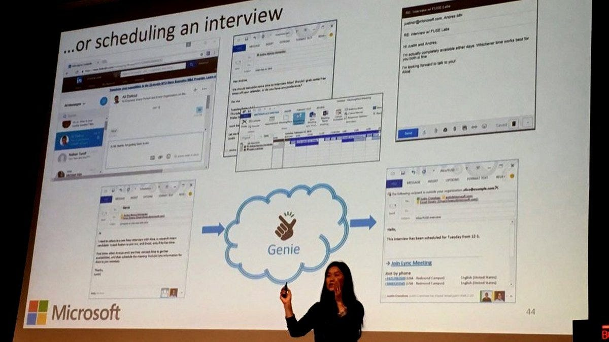
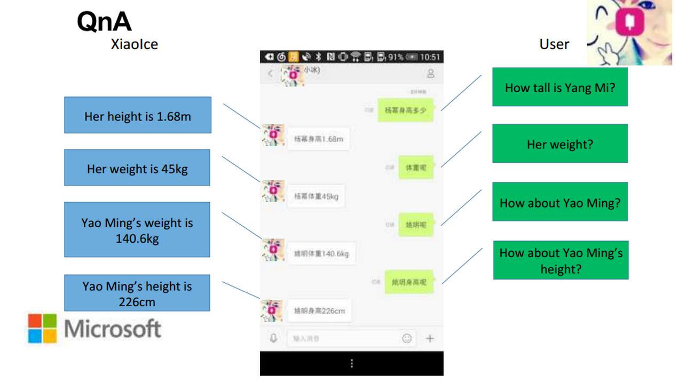
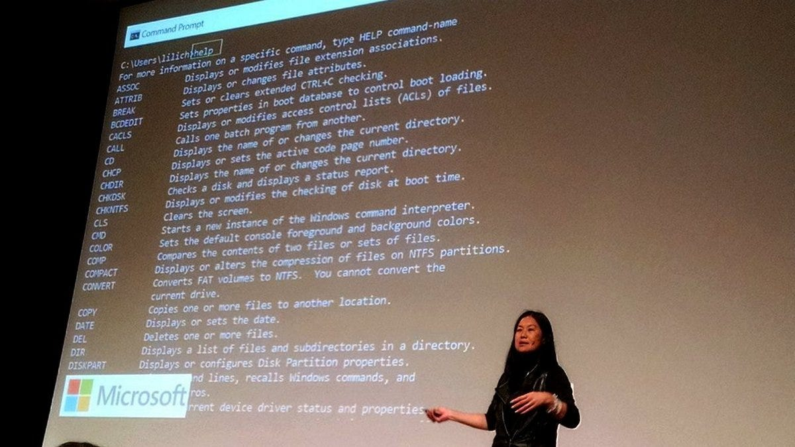
Peter Skomoroch (piattaforme AI e prossimi scenari)
Il cofondatore di skipflag ha fatto un intervento su alcuni strumenti di machine learning utili allo sviluppo di bots.
E’ la slide finale del suo talk, quella che per me è più affascinante in assoluto, quando parla di fuzzy APIs e di interazioni tra bots!
Vedi anche podcast.
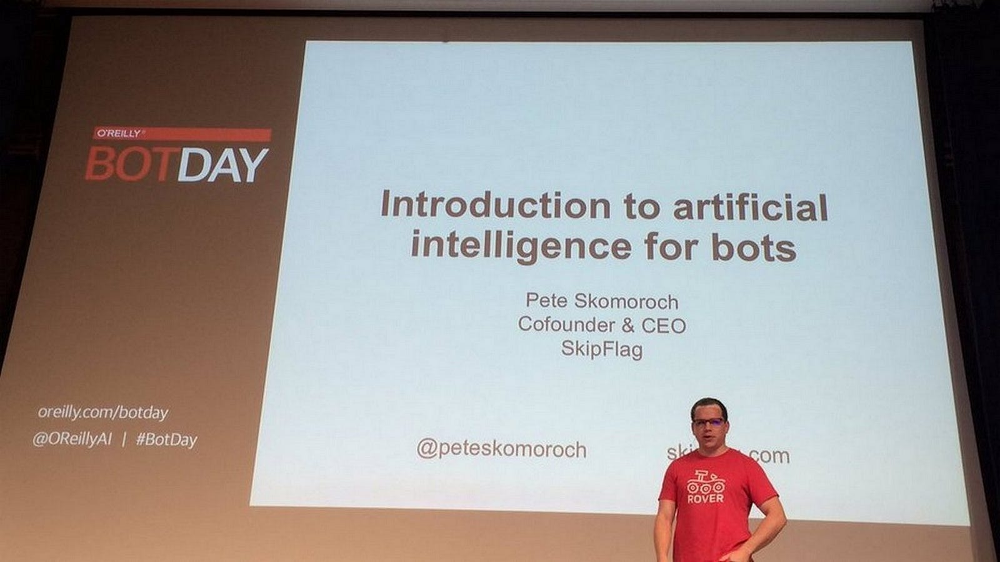
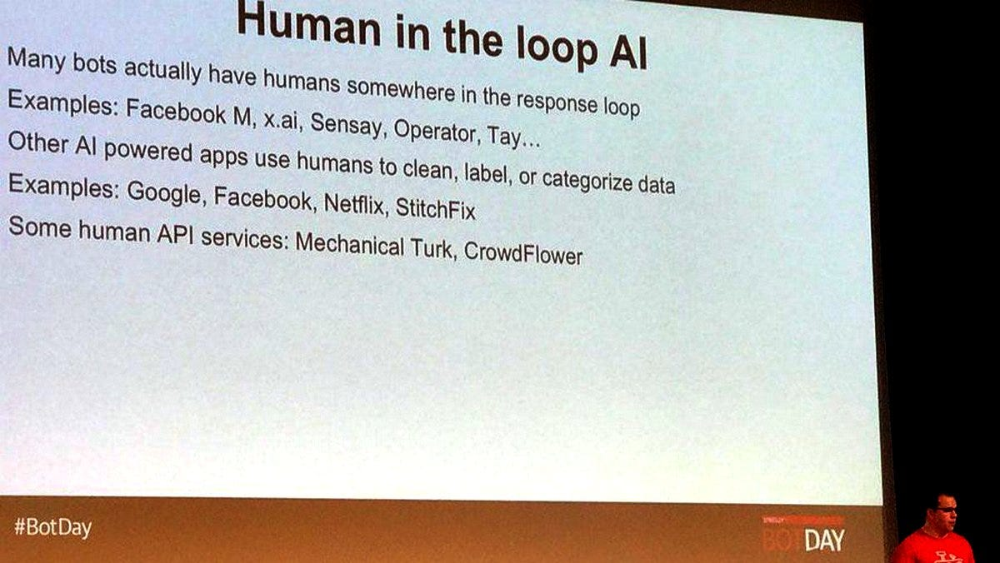
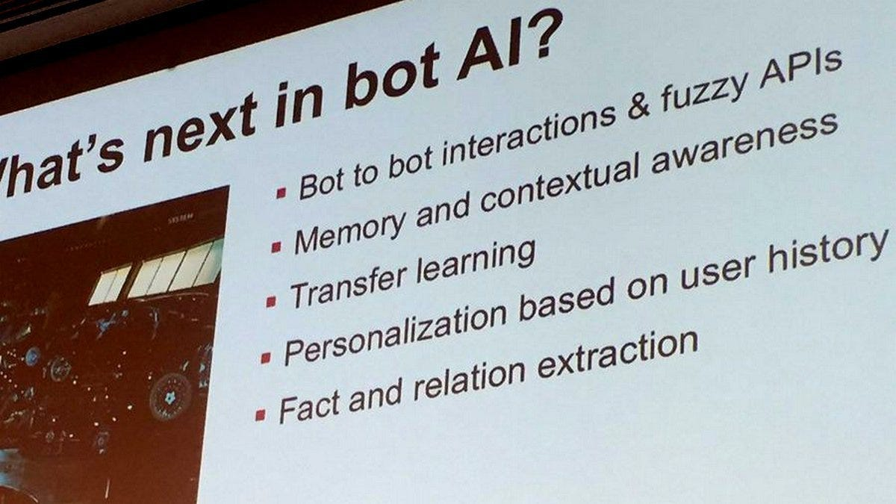
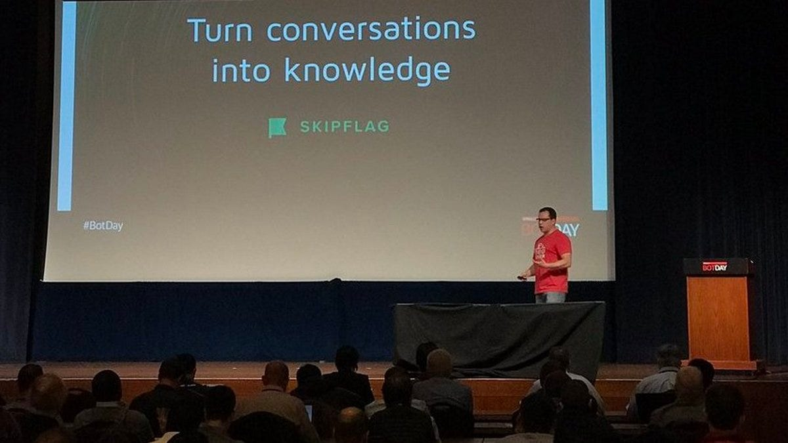
Andy Mauro (sulle piattaforme di messaggistica)
Il fondatore di automat.ai, ha fatto una comparazione tra i diversi approcci di UI/UX delle più diffuse piattaforme di messaggistica istantanea.
Mi ha fatto piacere che abbia citato la piattaforma Kik e l’approccio #NoAI di Ted Livingston. Interessante anche l’insistere su interazioni tra bots ed il problema della discovery.
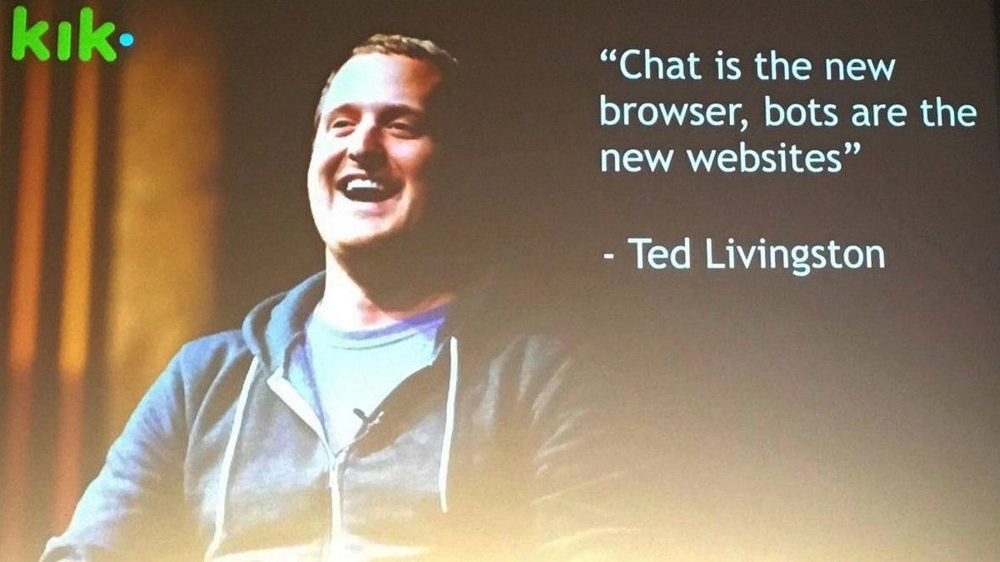
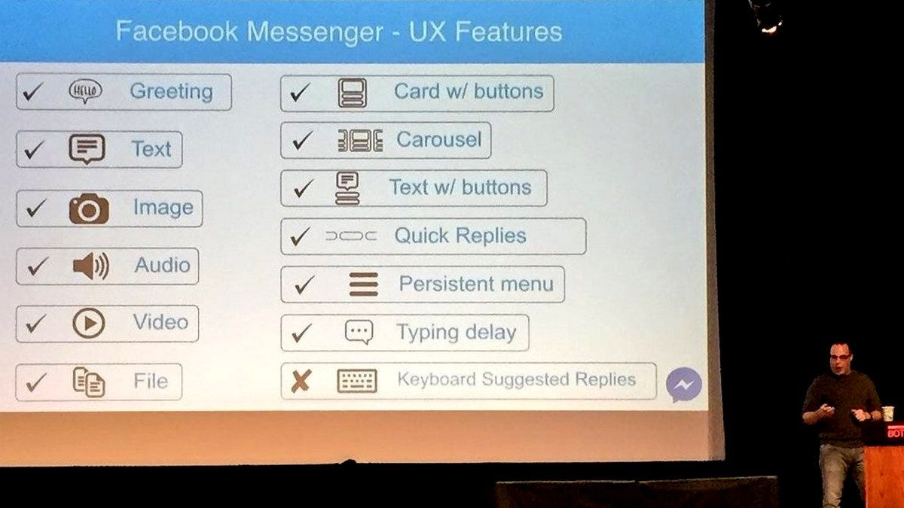
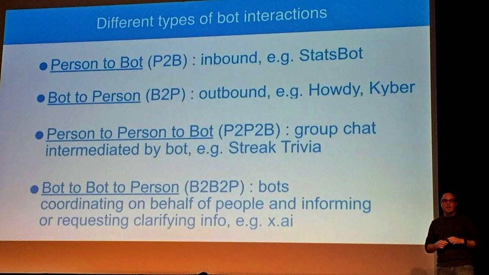
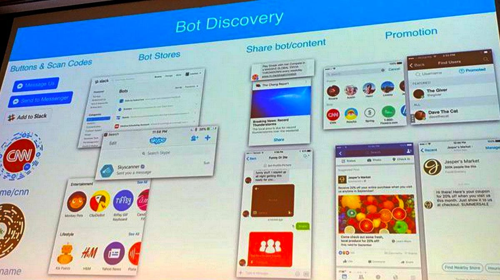
Amir Shevat (sui tools e le best practices)
L’onnipresente (agli eventi sui chatbots) evangelista Slack, ha fatto una overview generale sugli strumenti di sviluppo di bots, su tutto il ciclo di vita, dal prototyping agli strumenti di analytics. Tutto interessante e molto piaciuto dal pubblico.
Ho apprezzato che Amir non abbia parlato solo di botkit ma invece abbia fatto una overview sugli strumenti di terze parti. Ma mi è spiaciuto però che non sia stato menzionato ChatScript tra gli strumenti di scripting authoring, e nemmeno ha citato SuperScript, di Rob Ellis, che lavora in Slack anche lui. Poi forse non mi trovo d’accordo su alcuni statements fatti (per esempio la citazione dell’utilizzo di molteplici piattaforme di AI per fare un crowd-decision), comunque tutto interessante!
Infine, nella definizione delle best practices, Amir, dopo aver dato un colpo alla botte (il parlare del valore delle piattaforme di AI proprietarie), da un colpo al cerchio (il contro valore del “contesto” umano, ovvero la business logic peculiare di ogni applicazione, dominio del singolo sviluppatore/creatore del bot!).
E dice, in riferimento all’utilizzo di piattaforme di AI:
Fake it until you need it
Intendendo forse che è possibile “emulare” un comportamento smart, che la gente crede essere quello di sistemi di machine learning, finché davvero non c’è necessità di usare una piattaforma di intelligenza artificiale “esterna” (e spesso a pagamento), e che la cosa più importante è infine curare tutto il ciclo di vita convenzionale del software, con particolare attenzione ai sistemi di analytics e supervisione umana!
Last but not least, Amir ha annunciato il libro “Designing Bots” che pubblicherà nel 2017.
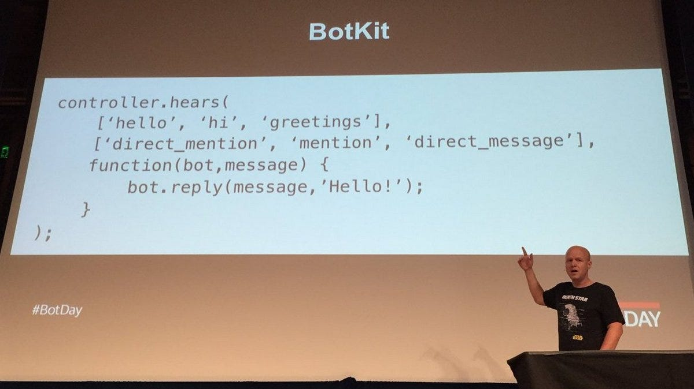
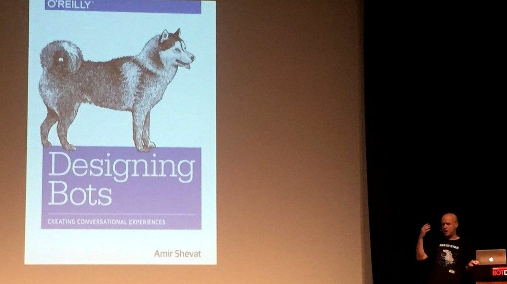
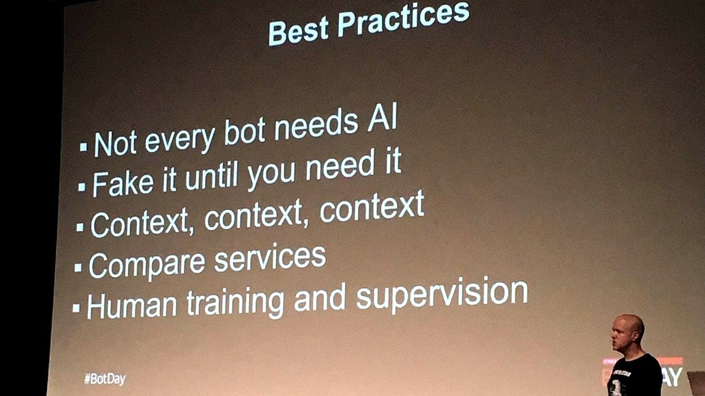
Joshua Browder (utilità sociale di bots per i cittadini)
Lasciate che spenda due parole di introduzione a questo ragazzo: fondatore di DoNotPay, il primo avvocato-robot in UK, Joshua Browder è chiamato il ‘Robin hood di internet’, secondo la BBC. Un combattente per i diritti dei consumatori. Ecco come la definizione del servizio sul sito DoNotPay:
DoNotPay has launched the UK’s first robot lawyer as an experiment. It can talk to you, generate documents and answer questions. It is just like a real lawyer, but is completely free and doesn’t charge any commission.
Joshua Browder, mosso in generale dall’intento di fare servizi utili ai cittadini, ha spiegato nel dettaglio il funzionamento di DoNotPay e la necessità di chatbots che non servano per l’home delivery della pizza, ma per risolvere problemi ai cittadini.
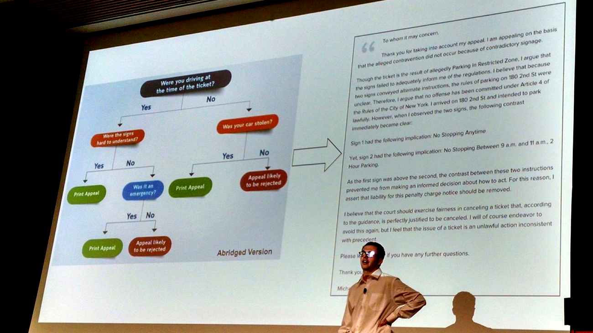
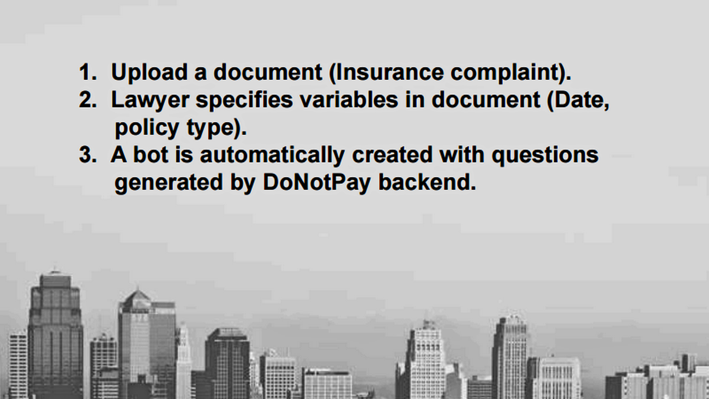
L’intervento di Joshua è senz'altro quello più “politico”, considerando tra l’altro che l’evento #botday era a pagamento (con biglietto a caro prezzo, quindi destinato ad un pubblico “azienda”) e l’evento è stato organizzato da una casa editrice che ha quindi cavalcato l’onda della chatbot fashion, insomma non si può certo dire che che fossimo nella culla del no-profit, eppure è significativo l’intervento del creatore di DoNotPay, anche perché pone giustamente il punto davvero critico ed interessante della applicazioni chatbots, ovvero l’impatto dell’intelligenza artificiale sul mondo del lavoro, un dibattito già iniziato con le polemiche su X.ai e che deve proseguire anche con una presa di coscienza delle istituzioni.
E’ curioso il fatto che Joshua abbia illustrato l’architettura software usata per DoNotPay, dichiarando di usare IBM Watson (una piattaforma di intelligenza artificiale, closed-source e di big player profit).
Gli chiederò asap conto di questa decisione :), perché di sistemi di natural language classification / understanding ce ne sono anche di opensource. Mistero o azione politica? Interessante… Stay tuned.
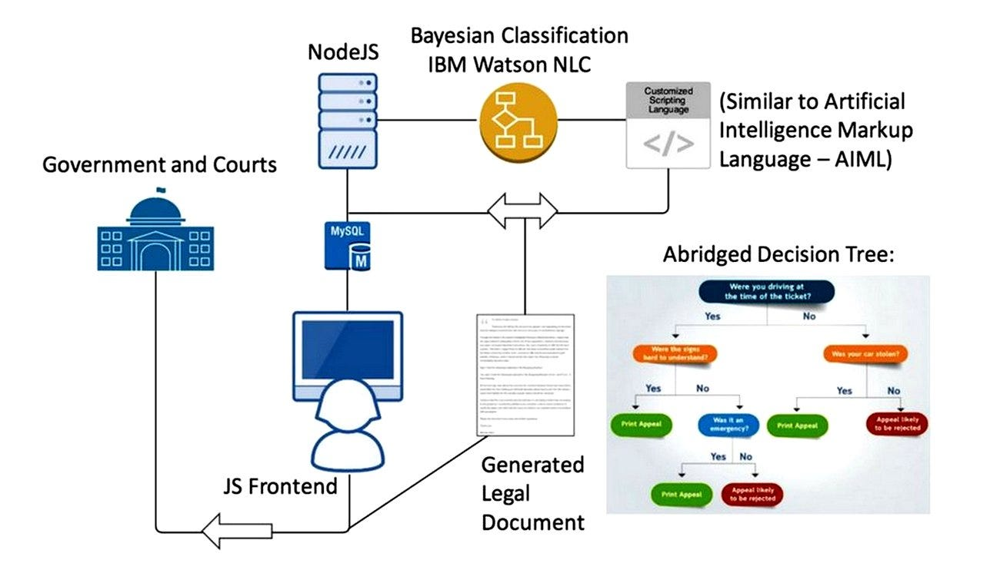
Altri articoli sull’evento:
Tutte le slides:
Ringrazio le persone che hanno fatto il live report, facendo tante foto e commentando, tra cui: Mariya Yao, botnerds, Sara Winge, Mary Parks, Jon Bruner, Kelly Manthey, Paolo Perazzo, Botanalytics, @OReillyAI, Cecily Robyn Lough, @ruchagokhale, @strataconf. etc. etc. :-)
Originally published on Medium.